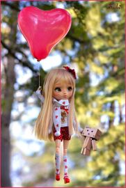
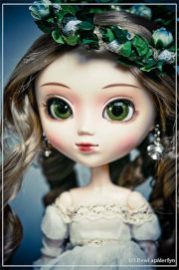
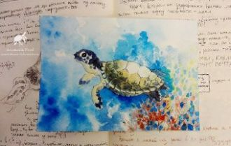

Забыть невозможно касаний твоих,С тобою делила весь мир на двоих.Забыть и уйти, и всё отпустить -Просто порвать между нами нить.
If I gaze in your eyesI’d see the shore insideIf I could dare to tryI just might catch your eyeIf I was by your side
С тобою, джаным, хочу быть рядом!С тобой, мой милый, буду счастливой...Но где ты, джаным?.. Ищу тебя я...С тобой хочу быть, но мне нельзя!..
Опустела без тебя Земля.Как мне несколько часов прожить?Так же падает в садах листва,И куда-то всё спешат такси.Только пусто на Земле одной,
Credeam intr-un vis amandoi
Doar patul si nimic intre noi
Azi iti scriu cat de mult te ador
Dar cuvintele ard si ma dor
Позвони мне,позвони!Позвони мне,ради Бога!Через время протяниГолос тихий и глубокий.Звезды тают над Москвой.Может,я забыла гордость?

Теплоходный гудок разбудил городок,На причале толпится народ.Все волнуются, ждут: только десять минутЗдесь всего лишь стоит теплоход,
Doar petale uscatecazute pe o carteImi spun ca tuEsti departeSi nu stii cum arde si nu stii cum doareTu nu estiUnde esti tu oare?
Остановки ночного метроПролетают как дни неизбежно.Этот город уже не такой как прежде.Без тебя - навсегда холода Разбивают горячие тайны.
Как побегПрогулки по улицам,Где суета кружится,Где у тоски нет лица,Забыться в кафе ночном,Где не были мы вдвоем,
Сквозь огни всех миров,Сквозь миллионы дорогЯ иду столько дней,Чтобы ты найти меня смог. Ты узнаешь меня по своим приметам.
Sun ennakkoluulos mua pelottaaen uskalla sanoo enää sanaakaansä et tee mitään muuta kun odotat vaanet pääsisit mut taas maahan pudottaa
Ой, у вишневому саду, там соловейко щебетав.Додому я просилася, а ти мене все не пускав.Додому я просилася, а ти мене все не пускав.

Για να σε βρω κίνησα γη κι ουρανόΠες μου πού χάθηκες πού είσαι τώραΠάψε να παίζεις μαζί μου κρυφτόΓια να σε ξαναδώ δε βλέπω την ώρα
O que você quer?O que você sabe?Não é fácil prá mimMeu fogo também me ardeÀs vezesMe vejo tão triste...
Скоро вечный самолёт,Набирая ход,Тебя увезёт.И сомнений теплоходВ помутненье водУносит, и вот...Нет, не смотри назад
Тёмными ночами кажется мне,Всё, о чем спрошу, узнаю во сне.Будет улыбаться в небе луна,Путь укажет мне она.Звёзды выше неба знают, где ты
Налегке мы плывём с ветерком.В сентябре, босиком мы тайком. По щеке проведи ты рукой,Уголки моих губ успокой.И что меня ждёт?
Даже если не сейчася мелькну в твоих глазахкаждой клеточкой своейя тебя любить умею (умею)
Я под дождём,А в твоих окнах свет есть.Не подождешь,Ты избегал встреч.Горят в такси чьи-то портреты,Кто-то спросилНаши приметы.